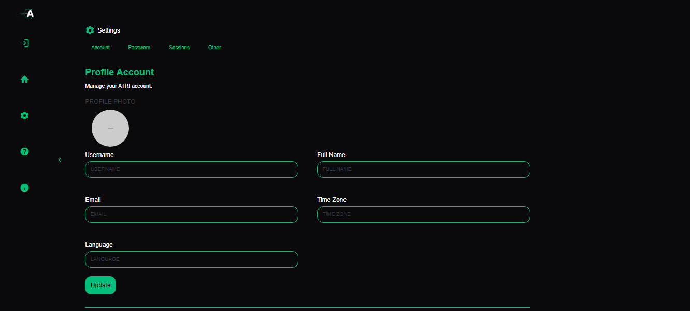
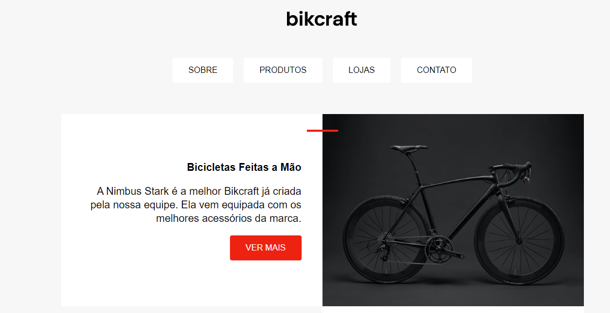
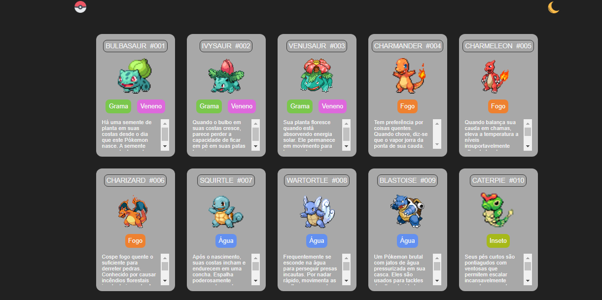

Allan Peterson de Sá
Front-end developer
Sobre Mim
Olá sou o Allan Peterson tenho 23 anos e moro na cidade de Poços de Caldas, desde muito novo sempre gostei do mundo dos videogames, acredito que por conta de tudo isso tive sempre um apreço maior para a área de desenvolvimento. Após o passar do tempo fui continuando com essa mentalidade e os jogos se tornaram uma forma de relaxar e também aprender, já que foi o que ajudou demais no meu desenvolvimento com o Inglês, também comecei a praticar mais exercícios físicos e hoje uma das minhas válvulas de escape é ir para academia.
Depois que consegui comprar minha moto me senti livre para seguir para qualquer lugar, e tenho como hobbie viajar de moto para cidades próximas, relaxar um pouco e apreciar a natureza que beira as estradas mineiras.
Formação
Atualmente estou graduando em Análise e Desenvolvimento de Sistemas pela Uninter. Sou técnico em desenvolvimento de sistemas pelo IF Sul de Minas. E possuo um bom conhecimento de Inglês, devido a um ano de Cambly consigo me comunicar sem problemas.
Portfólio
Apresente seus trabalhos, projetos e realizações neste espaço.
Tela de configurações ATRI
Faço parte de um projeto sem fins lucrativos, e por enquanto auxílio na criação do blog, essa tela de configurações é uma das que fiz dentre as outras. Ainda não finalizamos o blog como um todo, por enquanto temos somente o front-end.
Site Bikcraft
Enquanto estava fazendo o curso da Origamid, desenvolvi esse projeto durante as aulas de HTML e CSS, onde consegui aprender bastante enquanto buscava semelhança com o template do curso.
Pokedex
Embora seja algo que muitos fazem por aí, essa pokedex foi uma das primeiras interações que tive com HTML e CSS, criei junto a uma imersão que participei com o pessoal do DevEmDobro.
Contato
Acha que sou uma pessoa que posso agregar em algo ou gostaria de me contatar para um assunto específico? Mande uma mensagem abaixo, gostaria de conversar: